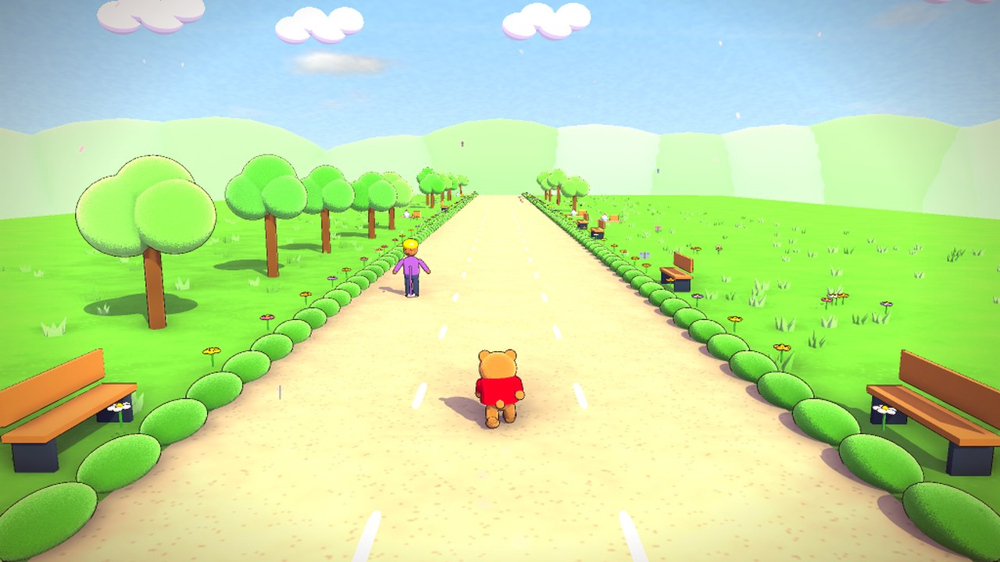

Num Num Run
Out now: the full game

Every PlayToEnjoy Titans game is designed to run on every level of device, from very old built-in graphics up to machines with a powerful graphics card.
About the game
Num Num Run is a running game for everyone. Help the little bear dodge, jump and duck his way to the Num Nums, then share them with Honey Bunny.
Sighted and blind players can play together or on their own. The audio features are built in: spoken menus, and sounds that tell you what is to your left, your right and up ahead. Switch them on or off from the menus. There is a one-ear mode, high contrast and colour-blind-safe colours, and the narrator always comes first.
Trailers
Watch the little bear run through all eight places. There are two versions: the trailer, and an audio described trailer where Alice, our describer, tells you what is on screen before the story carries on. Headphones are best.
Num Num Run trailer
The narrator tells the story while the bear runs, jumps, ducks and shares his Num Nums with Honey Bunny.
1 minute 34 seconds.
Read everything said and shown in this trailer
Narrator: Now, let us catch up with our little bear, and see what mischief he is getting up to.
Narrator: It is a bright and sunny morning in the park, and this is level one.
The bear: Tummy's rumbling! Num Nums, here I come!
The bear: Oh yeah! Num Nums!
Narrator: Ah, the seaside! Our little bear can hear the waves and taste the salty air.
Narrator: Roll up, roll up! The little bear has found the funfair, and this is level five.
Narrator: Brr! Snow has fallen over a sleepy, snowy little village, and our bear has wrapped up warm.
Narrator: My, what a nimble little bear.
The bear: Oh no, my Num Nums!
Narrator: Oh dear, oh dear. Up you get, little bear.
Narrator: And so we come to the end of our story, at the most wonderful place of all: the bakery.
Narrator: The best Num Nums are the ones you share, and he gives one to Honey Bunny.
The bear: This one's for you, Honey Bunny!
On screen: Eight storybook places to run through. A storyteller beside you, every step of the way. Spoken menus, and sound that tells you what is left, right and ahead. One-ear mode, high contrast, and colour-blind-safe colours.
Narrator: This story is best enjoyed with headphones, so you can hear exactly where everything is coming from.
On screen: Num Num Run. A running game for everyone. Free on Windows, Mac and Android, at playtoenjoytitans.com. A Blind and Boujee game from PlayToEnjoy Titans.
Narrator: Welcome to Num Num Run, a Blind and Boujee game.
The bear: Yay! Num Nums!
Num Num Run trailer, audio described
The same trailer with audio description. Each scene is described first, and the scenes play a little longer to fit.
3 minutes 4 seconds.
Read everything said in this trailer
Describer: The PlayToEnjoy Titans logo: a gleaming robot titan in gold and blue.
Describer: A sunny storybook park. A little caramel teddy bear in a red blazer with a gold B waves beside Honey Bunny, a honey-coloured rabbit in a red dress.
Describer: The bear stands on a sandy path between green lawns and puffy trees.
Narrator: Now, let us catch up with our little bear, and see what mischief he is getting up to.
The bear: Tummy's rumbling! Num Nums, here I come!
Describer: Num Num Run. A Blind and Boujee storybook.
Describer: He races towards us, ears bouncing.
The bear: Oh yeah! Num Nums!
Describer: At the station, he gobbles a Num Num in a burst of golden stars.
Describer: Along the boardwalk, past striped beach huts, he leaps a beach ball.
Narrator: Ah, the seaside! Our little bear can hear the waves and taste the salty air.
Describer: Sunset at the funfair: candy-striped tents and a Ferris wheel.
Narrator: Roll up, roll up! The little bear has found the funfair, and this is level five.
Describer: Snow, fir trees, and a cottage with a smoking chimney.
Narrator: Brr! Snow has fallen over a sleepy, snowy little village, and our bear has wrapped up warm.
Describer: In the city, he ducks and jumps through the traffic.
Describer: Bump! He tumbles, and stars spin round his head.
The bear: Oh no, my Num Nums!
Describer: A chequered bakery floor, glowing ovens, and a baker with a tray.
Narrator: Oh dear, oh dear. Up you get, little bear.
Narrator: And so we come to the end of our story, at the most wonderful place of all: the bakery.
Describer: He crosses the finish line under confetti.
Describer: He hands Honey Bunny a Num Num, and pink hearts float up.
Narrator: The best Num Nums are the ones you share, and he gives one to Honey Bunny.
The bear: This one's for you, Honey Bunny!
Describer: On screen: Eight storybook places to run through. A storyteller beside you, every step of the way. Spoken menus, and sound that tells you what is left, right and ahead. One-ear mode, high contrast, and colour-blind-safe colours.
Narrator: This story is best enjoyed with headphones, so you can hear exactly where everything is coming from.
Describer: On screen: Num Num Run. A running game for everyone. Free on Windows, Mac and Android, at playtoenjoytitans.com. A Blind and Boujee game from PlayToEnjoy Titans.
Narrator: Welcome to Num Num Run, a Blind and Boujee game.
The bear: Yay! Num Nums!
Last updated: 24 November 2026
Downloads
By downloading, you agree to our licence. The game is free for you to use and enjoy, but it belongs to PlayToEnjoy Titans: please do not copy it, share the file or reuse anything in it. Send your friends here to get their own copy.
The full game
Num Num Run is out now, and the full game is free. It has all eight places, from Sunny Park to the bakery, with practice mode, endless runs, the sound library and every setting. Online leaderboards show how your best runs compare with players everywhere, with a new daily challenge every day. When there is a new version, the game tells you on its main menu.
- Download for WindowsSetup file, about 95 MB.
- Download for MacMac installer (.pkg), about 100 MB.
- Download for AndroidAndroid app (.apk), about 80 MB.
Free trial (beta)
Our trials are betas. We put them out early so you can play them and tell us what you think: what you love, what could be better and anything that goes wrong. Your feedback helps us improve, fine-tune and fix each game before the full release, so every bit of feedback and support goes a long way. Send us your feedback.
The free trial has the first level, Sunny Park, with practice mode, the sound library and every setting. It lasts 30 days from the first time you play. The full game has eight levels.
- Download for WindowsSetup file, about 95 MB.
- Download for MacMac installer (.pkg), about 100 MB.
- Download for AndroidAndroid app (.apk), about 80 MB.
How to install
Choosing a download link starts the download straight away. The file is large, so it may take a few minutes. Your browser tells you when it has finished, and the file goes into your Downloads folder.
- Windows: open the Setup file. It installs for you alone and needs no administrator password. Our games are made by an independent studio and are not signed by Microsoft, so Windows may say “Windows protected your PC”. Choose More info, then Run anyway. The installer screens are standard Windows ones that NVDA, JAWS and Narrator read.
- Mac: open the .pkg file and follow the Installer: Continue, then Install. The game is not signed by Apple, so the first time macOS may say it cannot check it. Control-click (or right-click) the file, choose Open, then Open again. If macOS still refuses: System Settings, Privacy and Security, then Open Anyway.
- Android: open the .apk file on your phone. Android asks to allow installing apps from that source (Files, Chrome or your email app): allow it, then Install. It does not come from the Play Store.
Every game comes with a Read Me that explains the controls. If you use the audio features, headphones are best: left and right matter.
System requirements
Minimum
- Windows 10 or Windows 11, 64-bit; or macOS 12 or later (Intel or Apple silicon); or Android 8 or later, 64-bit.
- Any graphics, including older built-in graphics.
- Headphones or a speaker (one-ear mode works with one).
Recommended
- Stereo headphones.
- A keyboard, game controller or touchscreen.
Controls
| Action | Keyboard | Controller | Phone (touch) |
|---|---|---|---|
| Left one lane | Left arrow or A | Left stick or D-pad left | Swipe left |
| Right one lane | Right arrow or D | Left stick or D-pad right | Swipe right |
| Jump | Up arrow or W | A | Swipe up |
| Duck | Down arrow or S | B | Swipe down |
| Pause | Escape or P | Start | Hold two fingers |
| How am I doing? | T or F1 | Y | Two-finger tap |
| Replay the last hazard sounds | R or F2 | Select | In the pause menu |
Menus: Up and Down to move, Enter to choose, Left and Right to change a value, Escape to go back.
The four moves can be changed in Controls.
Accessibility features
- Speech and sound features built in, which you can switch on or off in the menus.
- One-ear mode: every sound in the middle, and each lane has its own note.
- High contrast: dimmed scenery, bright hazards and Num Nums with thick black outlines, and large white-on-black menus.
- Colour-blind-safe colours: hazards deep blue, Num Nums bright yellow.
- Short results, and a gentle difficulty with more warning before each hazard.
- The narrator always comes first: everything else dips while he speaks.
- TalkBack help on Android phones.
Feedback
Tell us what you think, or report a problem.
- Send feedback about Num Num Run (opens your email app)
- Join us on Discord
- Join our WhatsApp group